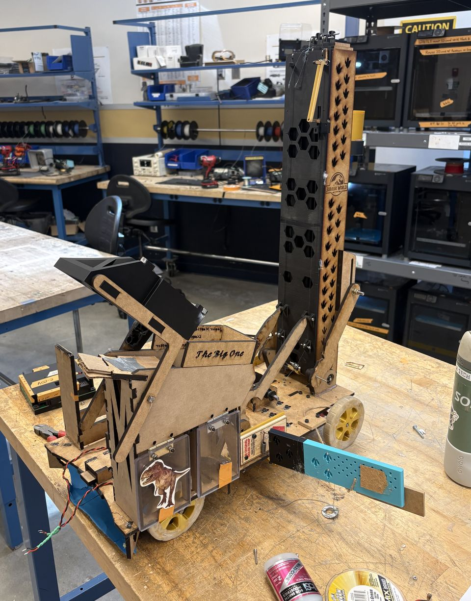

ME 2110 Competition Robot
Lead designer on a team-built competition robot for Georgia Tech ME 2110. I came up with the major ideas behind the design, designed and built the lift mechanism, and wrote the firmware. We placed 3rd of 9 teams.
- When
- Summer 2026
- My role
- Lead designer
- Tools
- SolidWorks, C++, Teensy

Overview
In ME 2110, teams design and build a robot that has to complete a set of tasks on its own during a timed head-to-head competition. Our robot, "The Big One," drives into position, deploys a flap and lifts game pieces with a tall tower.
What I did
- Came up with the major ideas behind the robot’s overall design as the team’s lead designer, modeling it in SolidWorks.
- Designed and built the lift mechanism.
- Wrote C++ firmware on a Teensy microcontroller using a non-blocking state machine, so the robot could sequence drive, flap deployment and lift without one step freezing the others.
- Tracked down solenoid mistiming and a ring-buffer seeding fault that were causing unreliable triggers, and added ultrasonic sensor averaging and edge detection so the robot reacted to real events instead of noisy readings.
Result
Placed 3rd of 9 teams in our section’s round-robin competition.